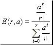
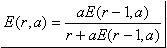

|
Erlang's Loss Formula Important feature in the theory of the Telecommunication networks is the Erlang's Loss formula which computes the probability that a "call offered to a group of circuits finds that all circuits are busy". Introduction Lets assume a M/M/r/r queuing system. Namely a system of r servers circuits where the arrival process and the service time follow a Poisson distribution with mean arrival rate l and mean service time 1/m respectively. The system does not provide waiting room. Thereby all blocked calls are cleared. It can be proved that the probability that all servers are busy is given by the Erlang B formula which is defined as follows:  , where a=l/m denotes the traffic load, whose units are Erlangs. It might be worth mentioning that the Erlang's Loss Formula (Erlang B) also computes the probabilities of blocking for M/G/r/r queuing systems, where the service times are independent identically distributed according to some general distribution G.It is useful to note the recursive form for the Erlang B formula, which simplifies the numerical evaluation:  , where E(r,a) is the probability of blocking, "a" the traffic offered in Erlangs, "r" the number of circuits and E(0,a)=1.Some useful characteristics can be observed by examining the Erlang B formula:
Interactive Erlang B CalculatorCalculate Erlang B loss probabilities for a range of offered traffic and circuit groups directly in your browser. ResultsEnter parameters and select Calculate. Traffic points—
Curves—
Y-axis minimum—
|